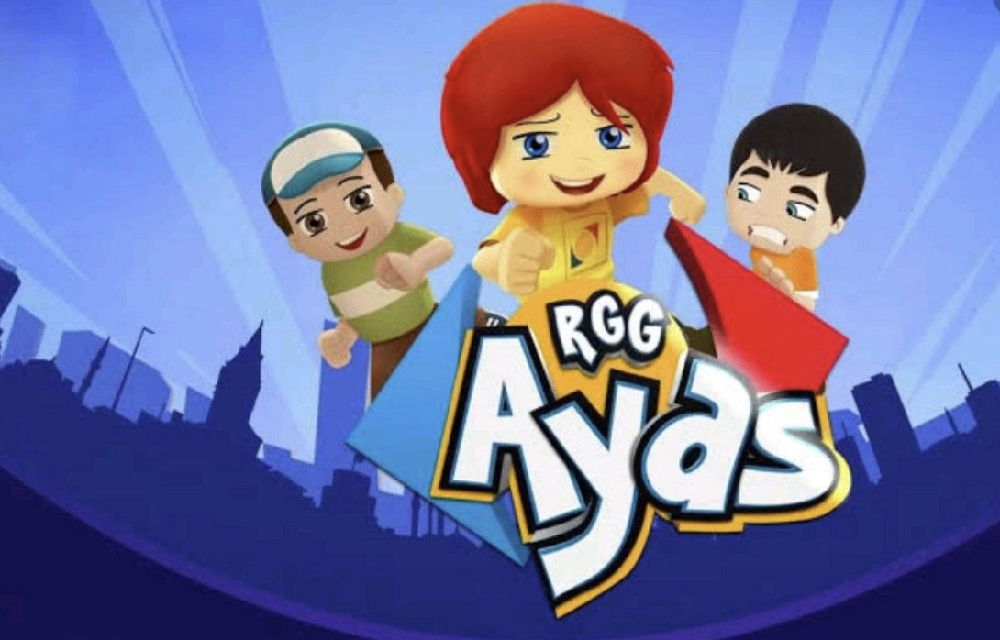

Ayaz
Ayaz çizgi filmi, çocuklara doğa sevgisi, arkadaşlık ve macera dolu hikayeler sunan eğlenceli bir yapımdır. Ayaz, küçük bir çocuk karakteridir ve her bölümde farklı maceralara atılır.
Toplumsal farkındalık gibi temaları işleyen Ayaz çizgi filmi, çocukların hayal gücünü geliştirmeye ve olumlu değerler kazandırmaya yönelik eğitici içerikler sunar.
Bu sevilen ve faydalı yapımı sizler de çocuklarınıza izletebilirsiniz.